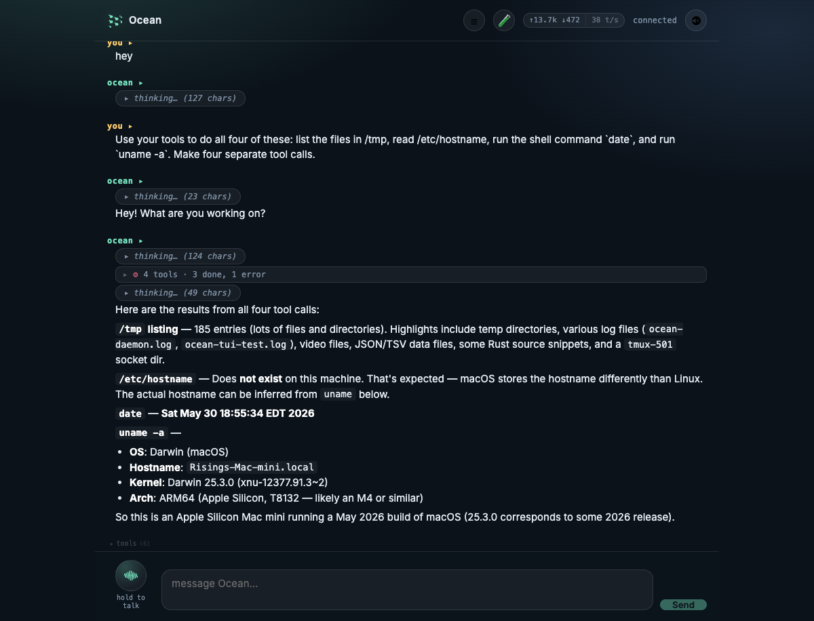

Ocean Surface is the thin client face over the daemon brain.
The sibling repo ../ocean-surface ships a Rust + Leptos browser PWA, a proxy for voice and same-origin daemon access, and later native shells. It holds no agent logic, provider credentials for coding models, or session storage; those stay in ocean-os.
Current local surface observed in this slice.
Checked without restarting or killing any user process.
Proxy health
live http://127.0.0.1:8790/health returned {"ok":true,"service":"ocean-surface-proxy","stt":true,"tts":true}.
Browser UI
The attached browser loaded http://127.0.0.1:8790/. Visible controls included project/model pickers, sessions, gauntlet, voice orb, tool drawer, composer, and connected status.
Screenshot policy
Existing runnable captures already live under docs/ocean-os-site/assets/surfaces; this slice reuses them instead of fabricating a new capture.
The face and the brain are deliberately split.
ocean-surface is client-only
The repo's own instructions say it is the browser PWA + voice face, later Tauri native. It talks to ../ocean-os and keeps no sessions or agent logic locally.
Source: ../ocean-surface/CLAUDE.md:1-23, ../ocean-surface/README.md:1-17
Workspace crates
crates/ocean-surface-ui is the Leptos CSR/WASM UI. crates/ocean-surface-proxy is the axum service that serves the bundle and holds xAI STT/TTS credentials. The native GPUI shell now lives as crates/ocean-gui in the same sibling repo.
Source: ../ocean-surface/CLAUDE.md:24-31, ../ocean-surface/README.md:18-25
The UI subscribes to daemon events and reacts with Leptos signals.
All assistant text, thinking, tools, components, browser activity, and turn status arrive over SSE.
Bootstrap
On load, App creates a Daemon handle and calls bootstrap_then_connect(). The proxy's /api/config resolves daemon URL, voice readiness, maps key, LiveKit room hints, and tldraw sync hints.
Source: ../ocean-surface/crates/ocean-surface-ui/src/app.rs:17-30, ../ocean-surface/crates/ocean-surface-ui/src/daemon.rs:438-496
Subscribe
connect() opens /v1/agent/events, subscribes to named SSE event types, dedupes by SSE id, and filters events by session id to avoid cross-session bleed.
Source: ../ocean-surface/crates/ocean-surface-ui/src/daemon.rs:501-647
Send turns
The composer posts AgentTurnRequest to /v1/agent/turns with prompt, cwd/project id, existing session id, and client_type. The POST returns metadata; text still arrives through SSE.
Source: ../ocean-surface/crates/ocean-surface-ui/src/daemon.rs:194-207, ../ocean-surface/crates/ocean-surface-ui/src/daemon.rs:649-736
Render stream
apply_event mutates the transcript: assistant deltas, thinking blocks, tool calls, token stats, component mounts/unmounts, and browser-active focus cues.
Source: ../ocean-surface/crates/ocean-surface-ui/src/daemon.rs:1030-1256
The proxy makes phone/PWA usage practical.
Two jobs
The proxy serves the compiled WASM bundle and holds the xAI key for STT/TTS so the browser never sees the secret. It defaults to 0.0.0.0:8790 for same-network or tunnel access.
Source: ../ocean-surface/crates/ocean-surface-proxy/src/main.rs:73-105, ../ocean-surface/crates/ocean-surface-proxy/src/main.rs:80-105
Reverse proxy routes
The proxy forwards daemon API routes through the same origin: turns, events, sessions, models, projects, LiveKit token, and request cancellation. This avoids hardcoded localhost and mixed-content failures on a phone or tunnel.
Source: ../ocean-surface/crates/ocean-surface-proxy/src/main.rs:160-192
Voice setup
xAI auth resolves from XAI_API_KEY, then ~/.config/ocean-surface/xai.key, then legacy ~/.pi/agent/settings.json. /api/config reports readiness.
Source: ../ocean-surface/README.md:64-72, ../ocean-surface/crates/ocean-surface-proxy/src/main.rs:207-256
Not the session store
The proxy can carry a browser request, but sessions still live in the daemon. Surface adopts the daemon's session id from events and reuses it on turns.
Source: ../ocean-surface/CLAUDE.md:20-23
Agent-emitted components render as real Leptos UI.
This is the path scheduled heartbeat routines should eventually use for visible PWA status cards.
Render dispatch
ComponentView maps component_render kinds to live views: kanban, form, table, progress, markdown, dashboard, chart, timeline, stat, file tree, diff, code, callout, gallery, confirm, map, and video.
Source: ../ocean-surface/crates/ocean-surface-ui/src/components.rs:40-124
Interactions go back to daemon
Forms, cards, file trees, confirmations, maps, and other interactive components send POST /v1/component/event so a pending component_wait tool can resume.
Source: ../ocean-surface/crates/ocean-surface-ui/src/components.rs:1-6, ../ocean-surface/crates/ocean-surface-ui/src/daemon.rs:51-57, ../ocean-surface/crates/ocean-surface-ui/src/daemon.rs:1193-1243
Existing screenshots show live surface features.

Model picker + halt path from existing runnable capture.

Tool drawer/collapsed tool rendering.

Map component rendering through the component protocol.
The current dev loop is documented in the sibling repo.
# daemon must already be running in ../ocean-os ./run-surface.sh # opens/serves http://<host>:8790 ./smoke.sh # health + config + chat + voice checks
Build note
The UI crate is WASM-only; normal native workspace builds target the proxy. For UI work, build ocean-surface-ui for wasm32-unknown-unknown or run the script.
Source: ../ocean-surface/CLAUDE.md:33-42, ../ocean-surface/README.md:27-62